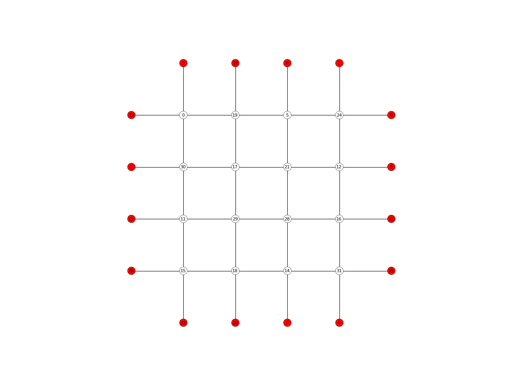

NetworkPlotter
-
class
compas.plotters.NetworkPlotter(network, **kwargs)[source] Definition of a plotter object based on matplotlib for compas Networks.
- Parameters
network (object) – The network to plot.
-
title str – Title of the plot.
-
network object – The network to plot.
-
vertexcollection object – The matplotlib collection for the network vertices.
-
edgecollection object – The matplotlib collection for the network edges.
-
defaults dict – Dictionary containing default attributes for vertices and edges.
Notes
For more info, see 1.
References
- 1
Hunter, J. D., 2007. Matplotlib: A 2D graphics environment. Computing In Science & Engineering (9) 3, p.90-95. Available at: http://ieeexplore.ieee.org/document/4160265/citations.
Examples
import compas from compas.datastructures import Network from compas.plotters import NetworkPlotter network = Network.from_obj(compas.get('lines.obj')) plotter = NetworkPlotter(network) plotter.draw_vertices( text='key', facecolor={key: '#ff0000' for key in network.leaves()}, radius=0.15 ) plotter.draw_edges() plotter.show() Methods
__init__(network, **kwargs)Initialises a network plotter object
clear()Clears the network plotter edges and vertices.
clear_collection(collection)Clears a matplotlib collection object.
Clears the network object edges.
Clears the netwotk plotter vertices.
draw_arrows(arrows)Draws arrows on a 2D plot.
draw_as_lines([color, width])draw_edges([keys, width, color, text, …])Draws the network edges.
draw_lines(lines)Draws lines on a 2D plot.
draw_loads([scale, tol, color])draw_points(points)Draws points on a 2D plot.
draw_polygons(polygons)Draws polygons on a 2D plot.
draw_reactions([scale, tol, color, identifier])draw_residuals([scale, tol, color, identifier])draw_vertices([keys, radius, text, …])Draws the network vertices.
gifified(*args, **kwds)Create a context for making animated gifs using a callback for updating the plot.
register_listener(listener)Register a listener for pick events.
save(filepath, **kwargs)Saves the plot to a file.
save_gif(filepath, images[, delay, loop])Save a series of images as an animated gif.
show([autoscale, tight])Displays the plot.
top()Bring the plotting window to the top.
update([pause])Updates and pauses the plot.
Updates the plotter edge collection based on the network.
update_linecollection(collection, segments)Updates a line collection.
update_pointcollection(collection, centers)Updates the location and radii of a point collection.
update_polygoncollection(collection, polygons)update_vertices([radius])Updates the plotter vertex collection based on the network.